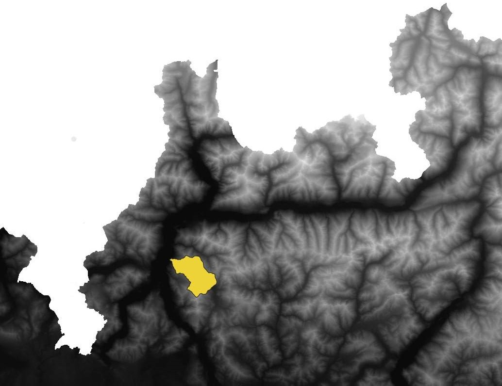

Area of interest

Landslides analysis with Susceptibility Map
Landslides are geological phenomena characterized by the movement of a mass of rock, soil, or debris down a slope. Natural factors and human activities like deforenstation, mining, construction can contribute to landslide occurrence. Understanding and assessing landslide hazards is crucial for managing and mitigating the risks they pose to human lives, infrastructure, and the environment. This is where susceptibility maps come into play. Susceptibility maps depict the spatial probability levels for a certain area to be exposure assessment which implies counting (or estimating) of people, property, systems, or other elements present in hazard zones.